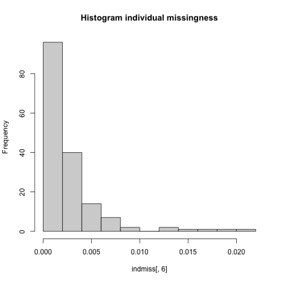

QC of HapMap3 data¶
Obtaining and visualizing missingness in the HapMap data files¶
The first step in GWAS analyses is to generate or obtain the genotype or sequencing data. Ideally these will be in Plink format (.bim,.bed,.fam)
You can download the HapMap example data here You MUST download and unzip the R folder from here as well to run downstream scripts.
Note
Due to limitation to bandwidth, we are currently using google drive to host the files, which doesn't allow the use of wget or curl to download the file. Please download the files manually.
Warning
If you download the summary statistics on a MAC machine, the gz file may decompress automatically, which might result in a corrupted Height.gwas.txt file (including only the header). If this happens then you'll need to disable automatic decompression when downloading the file (eg. follow instructions here)
Reading the genotype data file and produce missingness data:¶
We will set a fileset variable to make it easier to adjust all downstream code and then produce SNP and individual missingness data:
FILESET=HapMap_3_r3_1
plink -bfile $FILESET --missing This will print a plink.imiss and plink.lmiss output file with the individual and SNP missingness data, respectively.
The plink.imiss file contains the following columns:
| FID | IID | MISS_PHENO | N_MISS | N_GENO | F_MISS |
|---|---|---|---|---|---|
| 1328 | NA06989 | N | 4203 | 1457897 | 0.002883 |
| 1377 | NA11891 | N | 20787 | 1457897 | 0.01426 |
| 1349 | NA11843 | N | 1564 | 1457897 | 0.001073 |
The column headers correspond to the following:
- FID: Family ID
- IID: Individual ID
- MISS_PHENO: Missing phenotype? (Y/N)
- N_MISS: Number of missing SNPs
- N_GENO: Number of non-obligatory missing genotypes
- F_MISS: Proportion of missing SNPs
Generate Histogram to View Missingness.¶
indmiss<-read.table(file="plink.imiss", header=TRUE)
snpmiss<-read.table(file="plink.lmiss", header=TRUE)
# read data into R
png("histimiss.png") #indicates pdf format and gives title to file
hist(indmiss[,6],main="Histogram individual missingness") #selects column 6, names header of file
dev.off()
png("histlmiss.png")
hist(snpmiss[,5],main="Histogram SNP missingness")
dev.off() # shuts down the current device

An example bar plot generated using script in
hist_miss.R
Filtering steps¶
Filter on missingness¶
We want to begin performing quality control filtering on the data.
We begin with organizing our file naming convention and define our starting filter values.
sep="_"
TAG_GENO="geno"
GENO=0.02
TAG_MIND="mind"
MIND=0.02
OUT="$FILESET$sep$TAG_GENO"
OUT1="$FILESET$sep$TAG_GENO$sep$TAG_MIND"plink --bfile $FILESET --geno $GENO --make-bed --out $OUT
plink --bfile $OUT --mind $MIND --make-bed --out $OUT1Check for Sex Discrepancies¶
Note
if you have not already done so, YOU MUST use the split-x command to remove the psuedo autosomal region
gender <- read.table("plink.sexcheck", header=T,as.is=T)
pdf("Gender_check.pdf")
hist(gender[,6],main="Gender", xlab="F")
dev.off()
pdf("Men_check.pdf")
male=subset(gender, gender$PEDSEX==1)
hist(male[,6],main="Men",xlab="F")
dev.off()
pdf("Women_check.pdf")
female=subset(gender, gender$PEDSEX==2)
hist(female[,6],main="Women",xlab="F")
dev.off()
Remove SNPS that do not pass the sex check.
rem="rem"
OUT2=$OUT1$sep$rem
# This command generates a list of individuals with the status ?PROBLEM?.
grep "PROBLEM" plink.sexcheck| awk '{print$1,$2}'> sex_discrepancy.txt
plink --bfile $OUT1 --remove sex_discrepancy.txt --make-bed --out $OUT2Limit data to autosomal SNPs only¶
We wll generate a txt file with all the SNPS on the autosomes so that we can remove all SNPS that are on the sex chromosomes or in mitochondrial DND.
BIM=".bim"
AUTOSOME="autosome"
OUT3=$OUT2$sep$AUTOSOME
awk '{ if ($1 >= 1 && $1 <= 23) print $2 }' $OUT2$BIM > snp_1_22.txt
plink --bfile $OUT2 --extract snp_1_22.txt --make-bed --out $OUT3Perform MAF check and filter by MAF Threshold¶
plink --bfile $OUT2 --freq --out MAF_checkmaf_freq <- read.table("MAF_check.frq", header =TRUE, as.is=T)
pdf("MAF_distribution.pdf")
hist(maf_freq[,5],main = "MAF distribution", xlab = "MAF")
dev.off()
Now we want to filter out any SNPS with a MAF<0.05 for a small data set or 0.1 for a larger data set.
TAG_MAF="maf"
OUT3=$OUT2$sep$TAG_MAF
MAF=0.05
plink --bfile $OUT2 --maf $MAF --make-bed --out $OUT3View heterozygosity distribution and remove outliers¶
Generate a pruned subset of SNPs that are in approximate linkage equilibrium.
plink --bfile $OUT3 --indep-pairwise 50 5 0.5The --het flag in Plink computes observed and expected autosomal homozygous genotype counts for each sample, and reports method-of-moments F coefficient estimates (i.e. (
plink --bfile $OUT3 --extract plink.prune.in --het --out R_check het <- read.table("R_check.het", head=TRUE)
pdf("heterozygosity.pdf")
het$HET_RATE = (het$"N.NM." - het$"O.HOM.")/het$"N.NM."
hist(het$HET_RATE, xlab="Heterozygosity Rate", ylab="Frequency", main= "Heterozygosity Rate")
dev.off()
het <- read.table("R_check.het", head=TRUE)
het$HET_RATE = (het$"N.NM." - het$"O.HOM.")/het$"N.NM."
het_fail = subset(het, (het$HET_RATE < mean(het$HET_RATE)-3*sd(het$HET_RATE)) | (het$HET_RATE > mean(het$HET_RATE)+3*sd(het$HET_RATE)));
het_fail$HET_DST = (het_fail$HET_RATE-mean(het$HET_RATE))/sd(het$HET_RATE);
write.table(het_fail, "fail-het-qc.txt", row.names=FALSE)The command above generates the fail-het-qc.txt file and the command below saves the first two rows to a new file named het_fail_ind.txt
sed 's/"// g' fail-het-qc.txt | awk '{print$1, $2}' > het_fail_ind.txtHET="het_fix"
OUT4=$OUT3$sep$HET
plink --bfile $OUT3 --remove het_fail_ind.txt --make-bed --out $OUT4Transfer files to use for population stratification¶
rename files and copy to population stratification folder
mkdir 2_Population_stratification
bed=".bed"
fam=".fam"
bim=".bim"
mv $OUT4$bed ./qcout.bed
mv $OUT4$bim ./qcout.bim
mv $OUT4$fam ./qcout.fam
cp qcout* 2_Population_stratification
cp plink.prune.in 2_Population_stratificationcd 2_Population_stratification